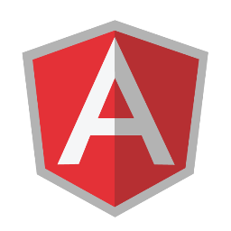

Markdown Converter
Created a simple MD Converter that allows:
- Headers
- Links
- Paragraphs
- Strong text
- Emphasizing text

Angular-github
Single-page application based on Angular.js, implemented for self education.
It actually display repositories catalogue where you can got to its details, owner page, and add favorites repositories (makes them available offline)
View Project